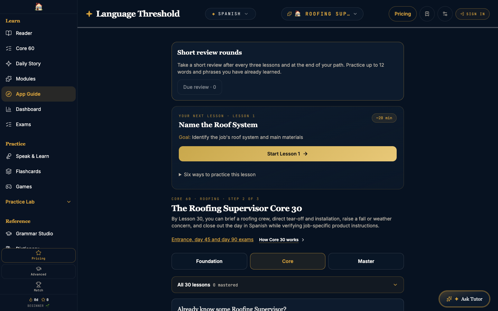
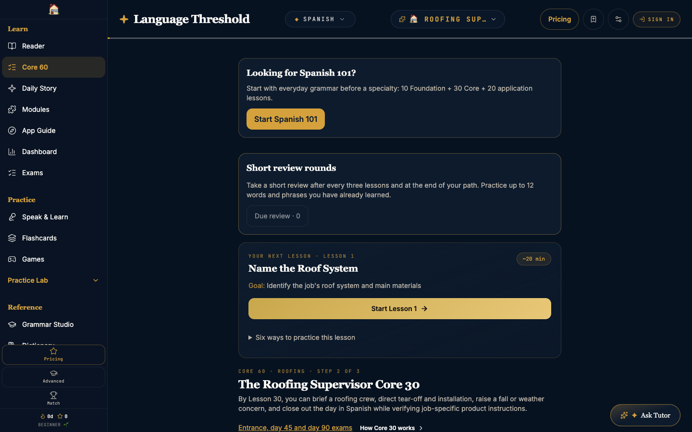
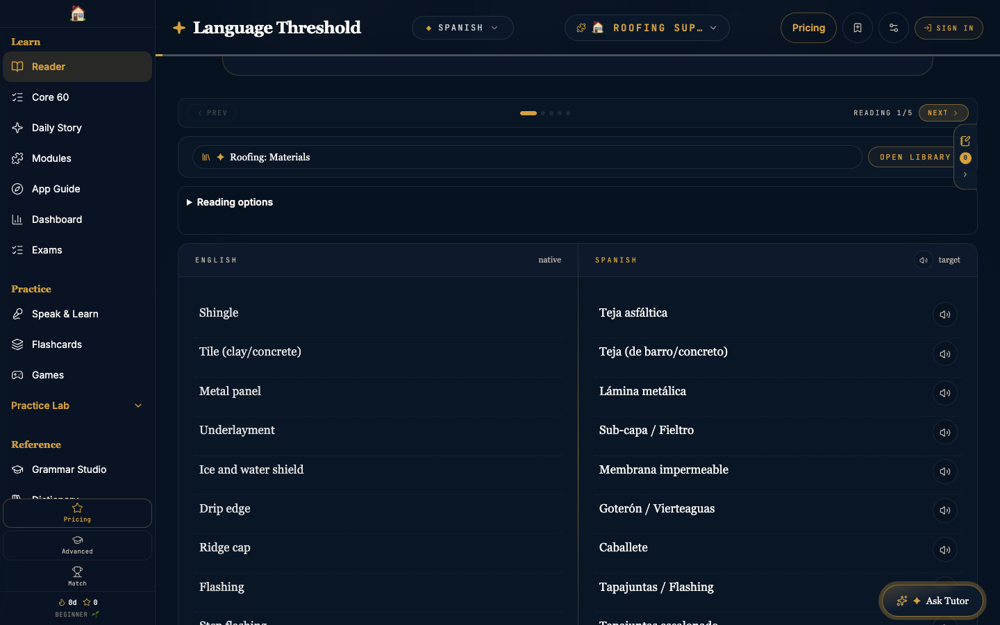
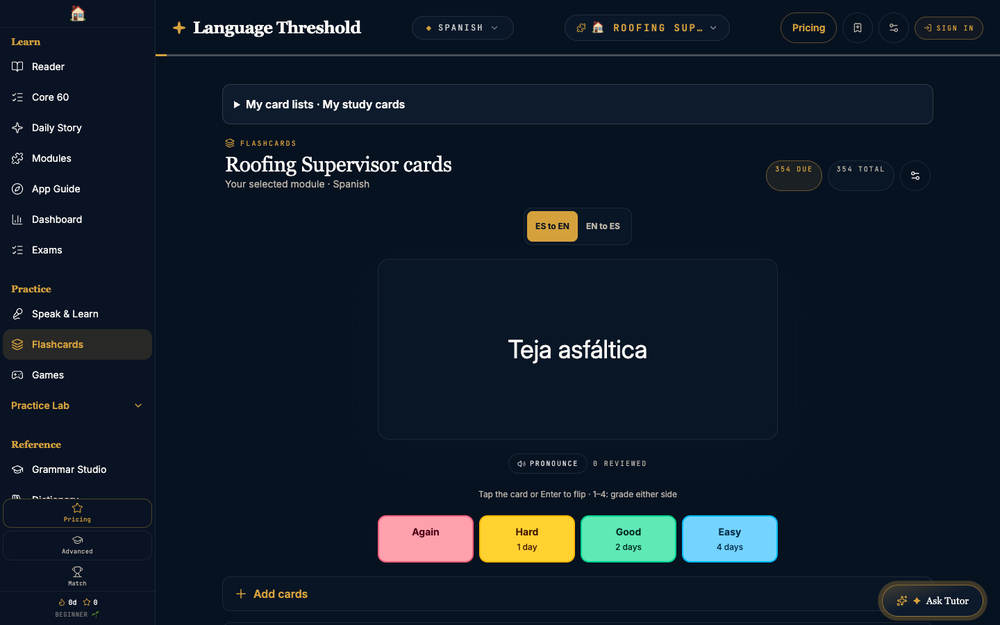
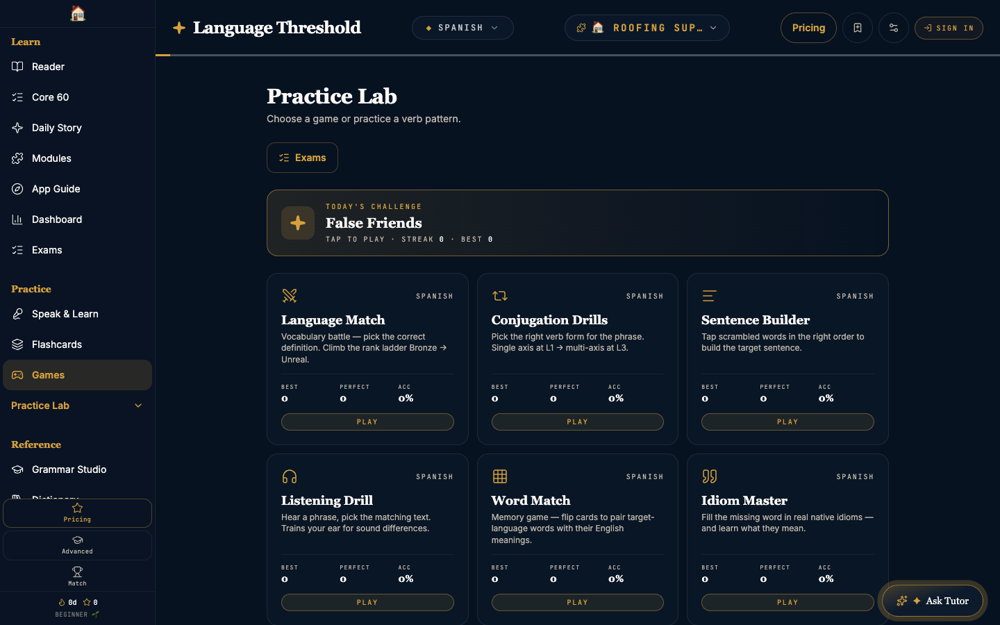
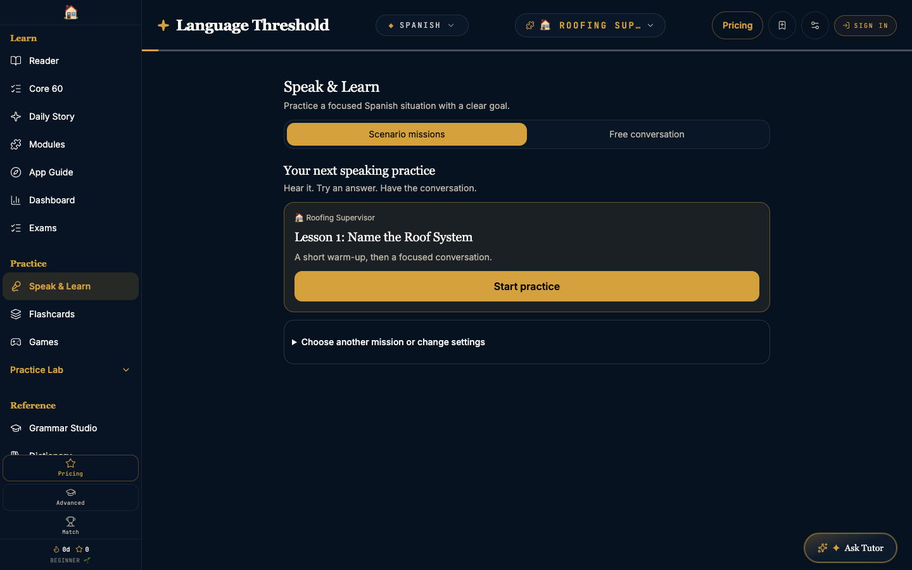
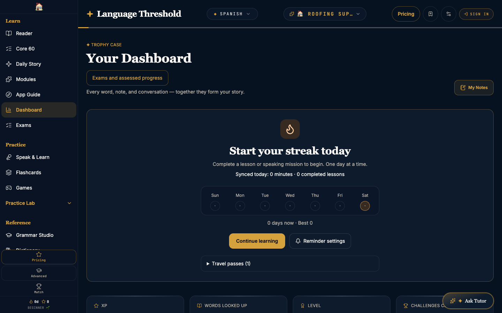

Language for the life you lead
Choose a topic that matters to you, then follow a learning path built around useful words and real situations.

Meet words in more ways
See it. Hear it. Say it. Type it. Handwrite it. Return to useful words through different kinds of practice.

Give every word a context
Read Spanish alongside English. Explore words and examples as you go, and save vocabulary you want to practice again.

Keep useful words close
Return to saved vocabulary and topic decks. Build familiarity with words connected to the subjects you want to learn.

Make practice part of your day
Choose a short challenge to revisit vocabulary, verb patterns, or listening. Find a practice mode that keeps you coming back.

Turn practice into conversation
Choose a speaking activity or available scenario and put words to use. Start a conversation when you are ready to practice.

Keep your next step in sight
Review your learning activity, return to your lesson path, and keep building language around the topics that matter to you.
